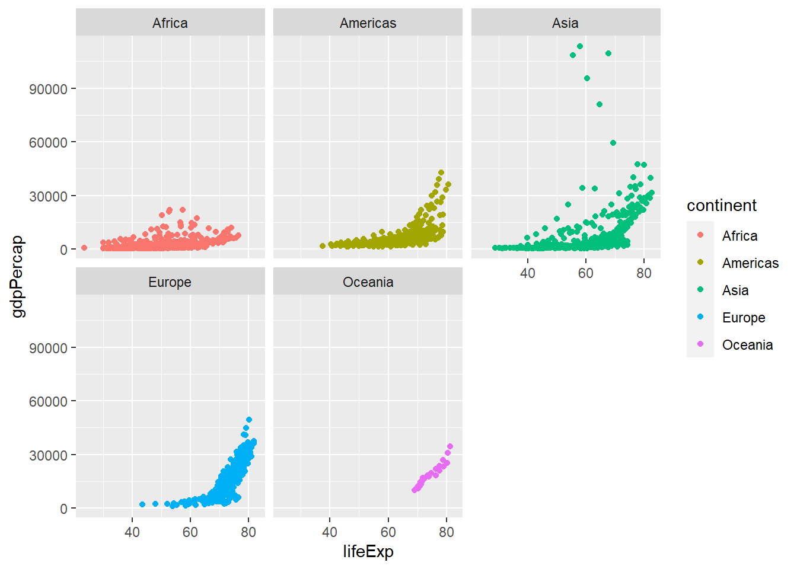
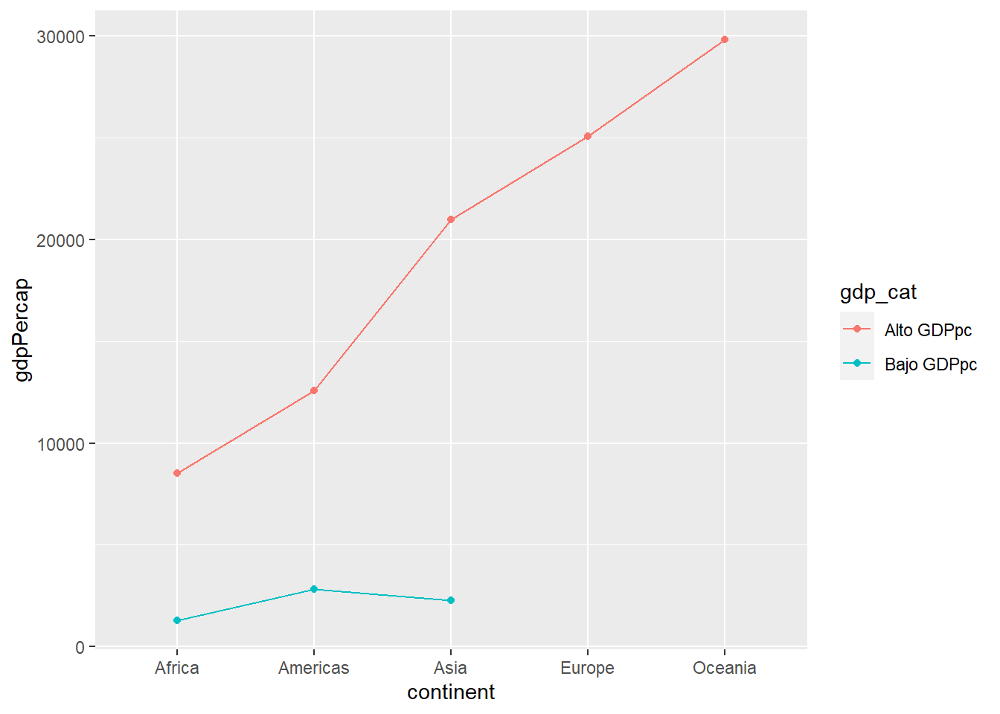
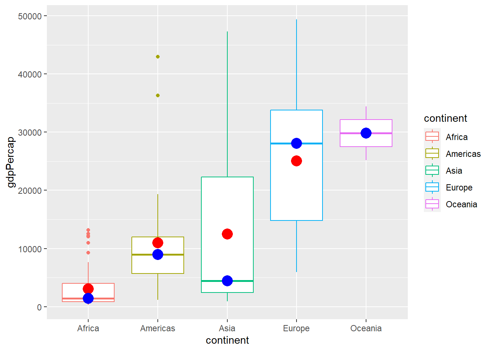
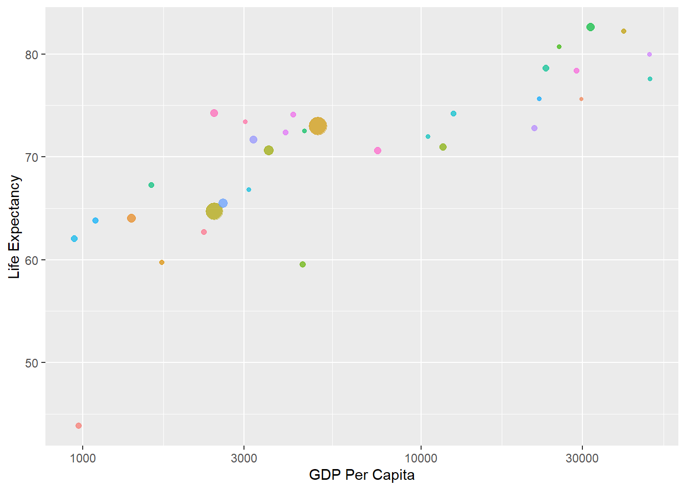
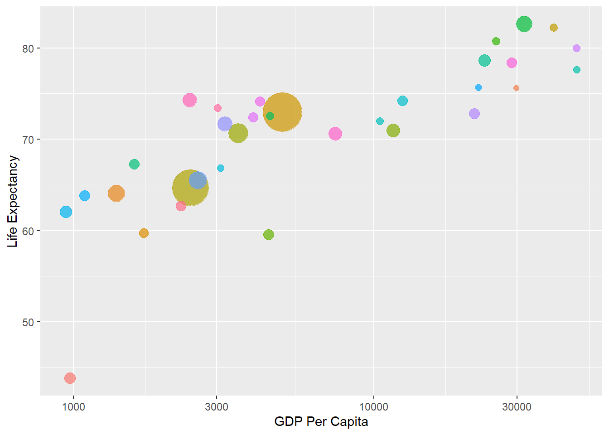

Sesión 6 2. Agregando más detalle a los gráficos
6.1 2.1 Facetas (Capa 4)
Permite descomponer un gráfico en subgráficos, también llamadas cuadrículas o facetas, según una variable cualitativa.
Sirve para comparar grupos, separándolos y así facilitando la identificación de diferencias significativas entre estos.

data |>
ggplot() + # Iniciamos la construcción del gráfico con ggplot
aes(x = lifeExp, y = gdpPercap, color=continent) + # Establecemos 'lifeExp' en el eje x y 'gdpPercap' en el eje y el color de cada punto según el continente al que pertenece el país
geom_point() + # Representamos cada país como un punto en el gráfico
facet_wrap(~continent) # Separamos el gráfico en múltiples paneles, uno para cada continente
Usamos facet_grid() para cruzar las categorías de dos variables cualitativas
data |>
filter(continent %in% c("Africa","Americas", "Europe")) |>
filter(year==2007) |>
mutate(gdp_cat=case_when(gdpPercap<4000~ "Bajo GDPpc",
TRUE~ "Alto GDPpc")) |>
ggplot() +
aes(x = lifeExp, y = gdpPercap, color=continent) + # Establecemos 'lifeExp' en el eje x y 'gdpPercap' en el eje y el color de cada punto según el continente al que pertenece el país
geom_point() + # Representamos cada país como un punto en el gráfico
facet_grid(cols = vars(continent), rows = vars(gdp_cat)) # Divide el gráfico en múltiples paneles. Las columnas se determinan por 'continent' y las filas por 'gdp_cat'
6.2 2.2 Tranformaciones Estadísticas (Capa 5)
Permite adicionar indicadores o estadísticos específicos calculados a partir de los datos de insumo.
Por ejemplo, se puede colocar la media de una variable numérica.
Podemos graficar haciendo uso de stat_summary.
data |>
mutate(gdp_cat=case_when(
gdpPercap<4000~ "Bajo GDPpc",
TRUE~ "Alto GDPpc")) |>
filter(year==2007) |>
ggplot()+
aes(x=continent, group=gdp_cat, color=gdp_cat)+
stat_summary(aes(y=gdpPercap), # Usamos stat_summary para calcular y representar la media de 'gdpPercap' para cada grupo (gdp_cat) como un punto
fun ="mean",
geom="point") +
stat_summary(aes(y=gdpPercap), # Usamos stat_summary para calcular y representar la media de 'gdpPercap' para cada grupo (gdp_cat) como una línea
fun ="mean",
geom="line") 
Podemos agregarlo encima de otro gráfico.
data |>
select(-4, -5) |>
mutate(gdp_cat=case_when(
gdpPercap<4000~ "Bajo GDPpc",
TRUE~ "Alto GDPpc")) |>
filter(year==2007) |>
ggplot()+
aes(x=continent)+ aes(y=gdpPercap) +
aes(color=continent) +
geom_boxplot()+
stat_summary(fun ="mean",
colour="red",
size = 5,
geom="point") +
stat_summary(fun ="median",
colour="blue",
size = 5,
geom="point")
6.3 2.3 Coordinadas (Capa 6)
- Sirve para especificar cómo será presentada la información de las variables en los ejes horizontal y vertical.
Cambiamos la escala de uno de los ejes.
data |>
filter(continent=="Asia", year==2007) |>
ggplot()+
aes(x = gdpPercap, y = lifeExp, # Establece 'gdpPercap' en el eje x, 'lifeExp' en el eje y...
size = pop, color = country) |> # ...el tamaño del punto según la 'pop' y el color de cada punto basado en el 'country'
geom_point(show.legend = F, alpha = 0.7) + # Representa cada país como un punto. No muestra la leyenda y ajusta la transparencia de los puntos a 0.7
scale_x_log10() + # Cambia la escala del eje x a una escala logarítmica para mejor visualización de datos con rangos amplios
labs(x = 'GDP Per Capita', # Renombra las etiquetas de los ejes x e y para presentación más clara
y = 'Life Expectancy')
6.4 2.4 Themes (Capa 7)
Funciones: theme_gray(), theme_bw(), theme_classic()
Es la capa que le da la apariencia final que tendrá el gráfico.
Se utiliza para personalizar el estilo del gráfico, pues modifica elementos del gráfico no ligados a los datos.
Se puede crear un tema para que se adapte a la imagen institucional de una organización o al tipo de diseño de un documento específico.
Se modifican temas tales como el color del fondo, los ejes, tamaño del gráfico, grilla, posición de los nombres, entre otros.
Cambiamos los temas de un gráfico de acuerdo a nuestro gusto:
data |>
filter(continent=="Asia", year==2007) |>
ggplot()+
aes(x = gdpPercap, y = lifeExp,
size = pop, color = country) |>
geom_point(show.legend = F, alpha = 0.7) +
scale_x_log10() + # Cambia la escala del eje x a una logarítmica para mejor visualización de datos con rangos amplios
labs(x = 'GDP Per Capita', # Renombra las etiquetas de los ejes x e y para presentación más clara
y = 'Life Expectancy') +
scale_size(range = c(2, 15))+ # Ajusta el rango de tamaños de los puntos entre 2 y 15 para mejorar la visualización
theme_gray() # Aplica un tema gris al gráfico, que es uno de los temas predefinidos de ggplot2